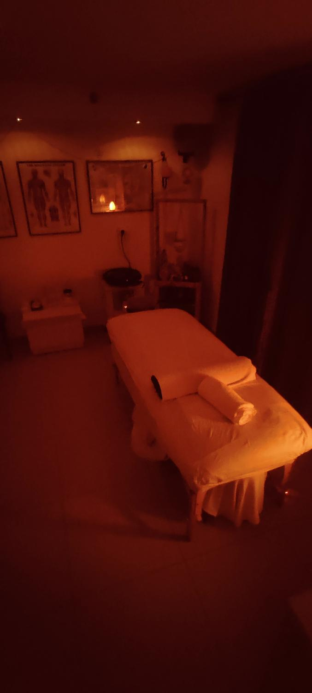
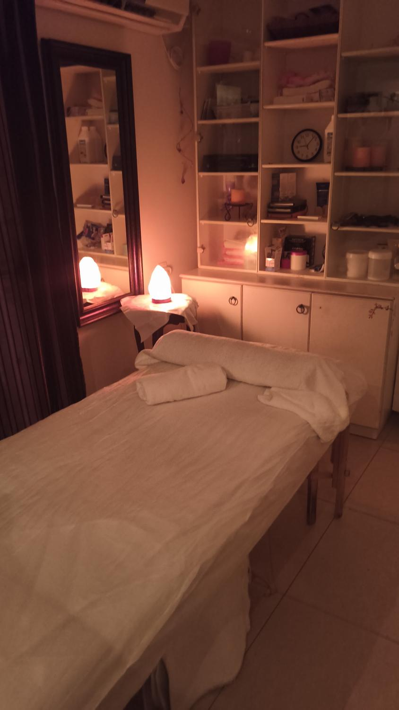
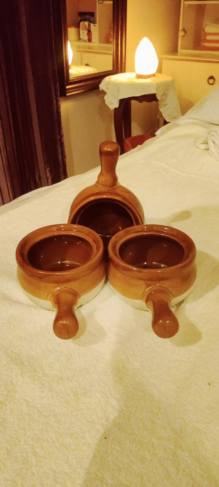
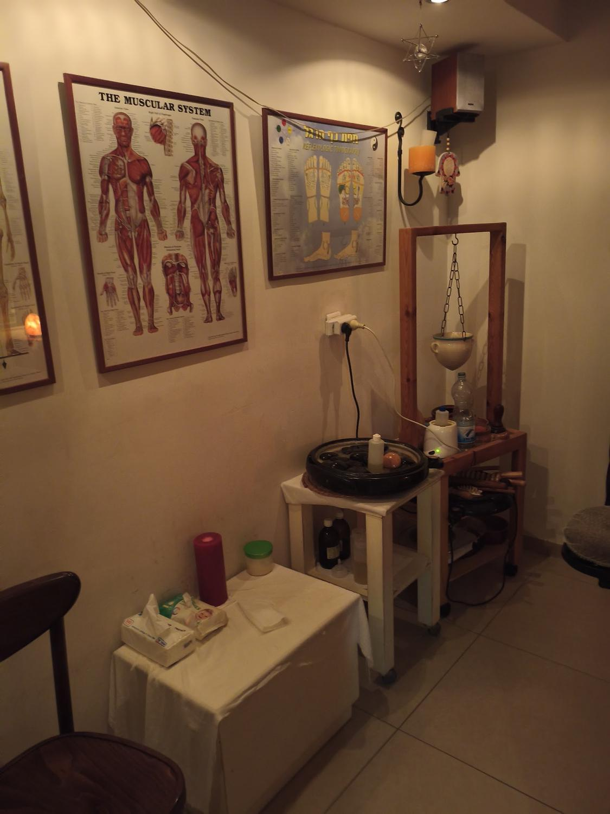
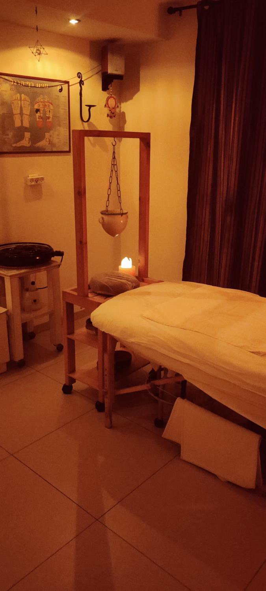
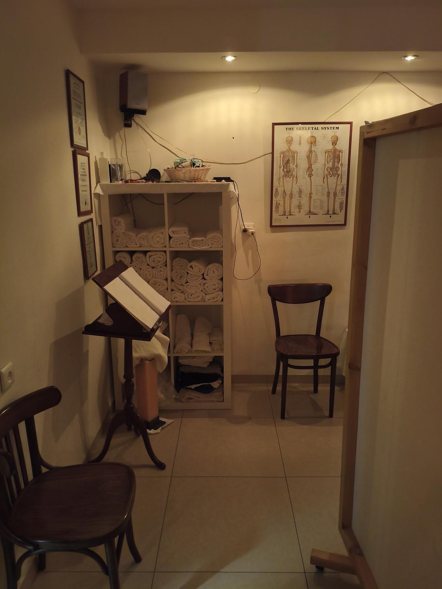

עיסוי רקמות עמוקDeep tissue massage
לשרירים תפוסים ומכווצים.For tight, knotted muscles.
קונספט לדוגמה שנבנה עבור עיסוי במגע רגוע · זה אינו האתר הרשמי של העסקA sample concept built for Calm Touch Massage (עיסוי במגע רגוע) · This is not the business’s official website

עיסוי במגע רגוע: עיסוי רקמות עמוק, כוסות רוח וקינזיו טייפ אצל אייל, בקרית מוצקין.Calm Touch Massage: deep tissue massage, cupping and kinesio taping with Eyal, in Kiryat Motzkin.
עיסוי רקמות עמוק, גם בשילוב כוסות רוח, וסרט קינזיו כשצריך. בחדר שקט, לאור מנורות מלח.Deep tissue massage, with cupping too, and kinesio tape when it’s needed. In a quiet room lit by salt lamps.



מנורות מלח, מגבות מגולגלות ומיטת טיפולים.Salt lamps, rolled towels and a treatment table.
עיסוי רקמות עמוק, גם בשילוב כוסות רוח.Deep tissue massage, with cupping too.
על הקיר מערכת השרירים, על המיטה הגב שלכם.The muscular system on the wall, your back on the table.
סרט קינזיו, שממשיך איתכם הביתה.Kinesio tape, which goes home with you.
ראשון עד חמישי 7:00–21:00, שישי עד 16:00.Sunday to Thursday 7:00–21:00, Friday until 16:00.
מה שמטופלים מזכירים בביקורות.What clients mention in their reviews.

לשרירים תפוסים ומכווצים.For tight, knotted muscles.
בשילוב עם העיסוי.Together with the massage.
סרט גמיש שנשאר על העור.A stretchy tape that stays on the skin.
“הגעתי לאייל בהמלצה של חבר שמטופל אצלו שנים. הגעתי עם שרירים תפוסים, וקיבלתי טיפול מקצועי של עיסוי רקמות עמוק בשילוב כוסות רוח. אייל מקצועי מאוד, יודע בדיוק מה הוא עושה, וההבדל הורגש כבר אחרי הטיפול.”
“I came to Eyal on the recommendation of a friend who has been his client for years. I came with tight muscles and got a professional deep tissue massage combined with cupping. Eyal is very professional, knows exactly what he’s doing, and I felt the difference right after the treatment.”
“ידי זהב, באתי כאובה על סף בכי ואיל ברוך פרם כל שריר מכווץ. חוויה מרפאה.”
“Golden hands. I came in pain, close to tears, and Eyal gently undid every knotted muscle. A healing experience.”
“העיסוי מאוד מאוד מומלץ. בן אדם רציני, עיסוי מושקע… ממליצה בחום, מטופלת קבוע!!”
“The massage is very, very recommended. A serious person, a thorough massage… Warmly recommended, I’m a regular!!”
“מעסה מדהים ומקצועי, אצלו כבר כמה שנים, ולא מחליפה בעד שום הון.”
“An amazing, professional massage therapist. I’ve been going to him for a few years and wouldn’t switch for anything.”
“הגעתי למקום והופתעתי לטובה מאייל, מעסה ברמה גבוהה מאוד, איש נעים ומקצוען! ממליץ מאוד”
“I came and was pleasantly surprised by Eyal, a very high-level massage therapist, a pleasant man and a pro! Highly recommended”
בוואטסאפ או בטלפון לאייל: 054-645-5228.On WhatsApp or by phone to Eyal: 054-645-5228.
ראשון עד חמישי 7:00–21:00, שישי 7:00–16:00, שבת סגור.Sunday to Thursday 7:00–21:00, Friday 7:00–16:00, closed on Saturday.
בביקורות מוזכרים עיסוי רקמות עמוק, כוסות רוח וסרט קינזיו. על כל השאר אפשר לשאול את אייל.Reviews mention deep tissue massage, cupping and kinesio tape. For anything else, ask Eyal.

קרית מוצקיןKiryat Motzkin